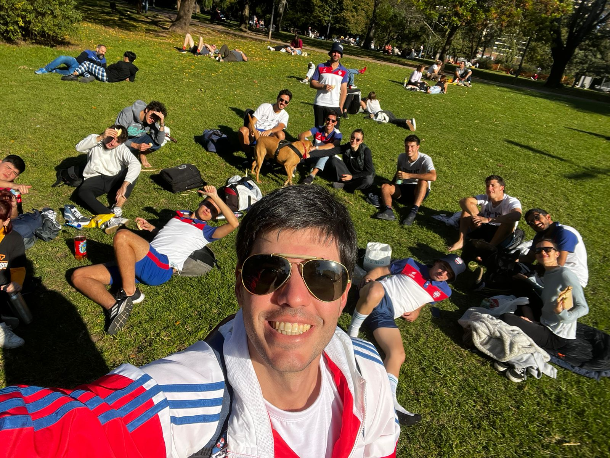
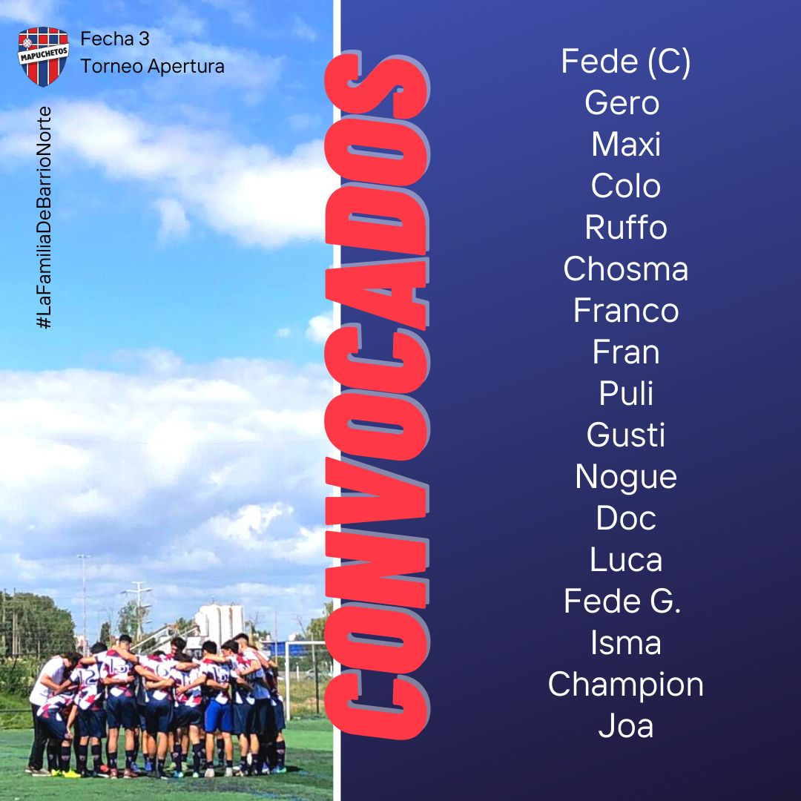

Noticias
Partido perdido, cantina ganada.

El equipo de Barrio Norte no pudo contra Cafeteros "B" por la 3° fecha y así llegó su primera derrota en el Torneo Apertura. El partido fue por 2-1 para Cafeteros. El gol de Mapuchetos fue de Luca Ratto en el segundo tiempo. A destacar la convocatoria que tuvo la cantina más allá de la derrota. Otro tercer tiempo ganado para el Tricolor.
El Mister confirmó sus 17 jugadores.

El mister confirmó a los 17 jugadores que disputarán la 3° fecha del Torneo Apuerta "El Trébol" este domingo 1 de mayo a las 10:30hs. en el predio de Argentinos Juniors, semillero de campeones. El rival será Cafeteros "A", uno de los dos Cafeteros que integran el torneo.
Por problemas personales y saludables hubieron varias bajas, y por ese motivo se terminó sumando a los conovocados el delantero Federico G.
Gran victoria de Mapuchetos.

El domingo por la mañana se disputó el encuentro entre Mapuchetos FC vs. 25 de
Mayo en el predio de DockSud por la 6° fecha del torneo de verano "El Trébol". El triunfo quedó en manos
del Tricolor que goleó y gustó. La victoria fue contundente, 4-0 para los Neuquinos. El primer tiempo
fue ampliamente dominado por el puntero del campeonato, que no erró y acertó una eficacía de 100% tiros
al arco, yendosé al descanso por 3-0. Mientras que en el segundo tiempo, quizás un poco más relajado y
con un rival sin nada que perder, el partido fue más trabado, más disputado en la mitad de cancha y con
un poco más de juego a favor de 25 de Mayo. Pero faltando 10 minutos para que finalice el encuentro,
Mapuchetos sentenció el 4-0 final. Los goleadores del encuentro fueron: Joa Ibañez (x2), Nogueira e
Ismael Contreras.
Convocados para enfrentar a 25 de Mayo.

El DT de Mapuchetos FC, Seba E., dio la lista de convocados que se enfrentará a
25 de Mayo el domingo 27 de marzo por la 6ta fecha del Torneo de verano "EL Trébol". Con una lista total
de 17 jugador a disposición del técnico, "El Tricolor" se prepara de la mejor manera para una nueva
jornada luego contundente victoria por 3-0 vs. Showtime en la quinta fecha del torneo de verano.
Goleada de Mapuchetos.

Este domingo, por la 5° fecha del torneo de verano, Mapuchetos venció 3-0 a Showtime en un partido perfecto para el tricolor. Comenzó dominando desde el minuto 1 y hasta finalizar el encuentro el rival no pudo ni siquiera acertar un tiro al arco. El primero gol lo concretó Luca Ratto, quien fue la figura del partido. Mientras que Joa Ibañez finalizó con un doblete, lo que lo pone como el goleador del torneo.
Mapuchetos volverá a jugar el próximo domingo 27 de marzo frente a 25 de Mayo, por la 6° fecha del
torneo.